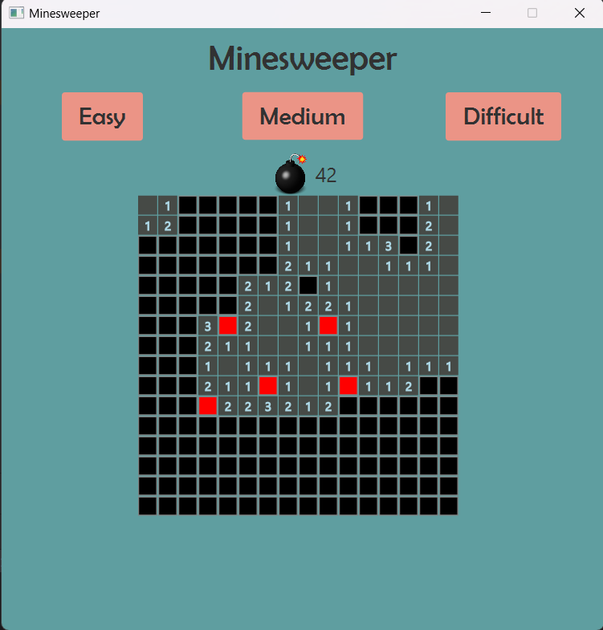
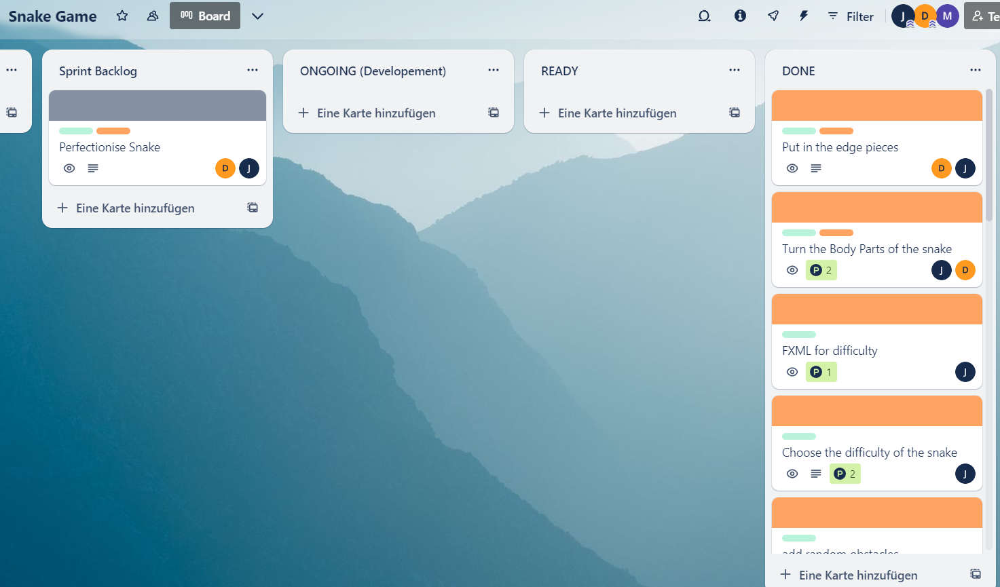
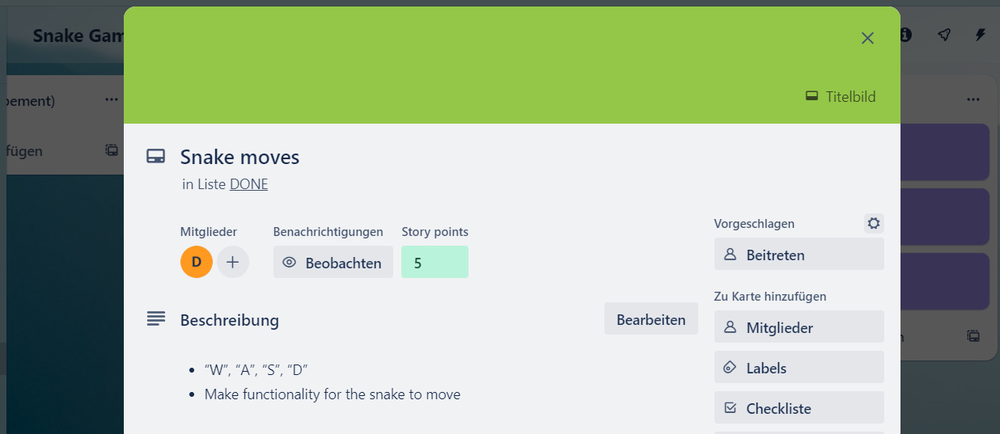

- Erster Einsatz von GitHub
- GitHub ermöglicht, dass man gemeinsam an einem Projekt arbeiten kann.
- beim Hochladen des neuen Codes vergibt man Commits
- Commits sind Kommentare, die den neu geschriebenen Code beschreiben.
- Verwendung von Rekursion(Methode ruft sich selbst immer wieder auf)


- Klassisches Projektmanagement mit:
- Pflichtenheft
- Projekthandbuch
- Projektstrukturplan
- Einsatz von GitHub




- Agiles Projektmanagement(SCRUM):
- Einsatz von Trello. Ermöglicht, dass Arbeitspakete erstellt und verteilt werden können
- Einsatz von GitHub